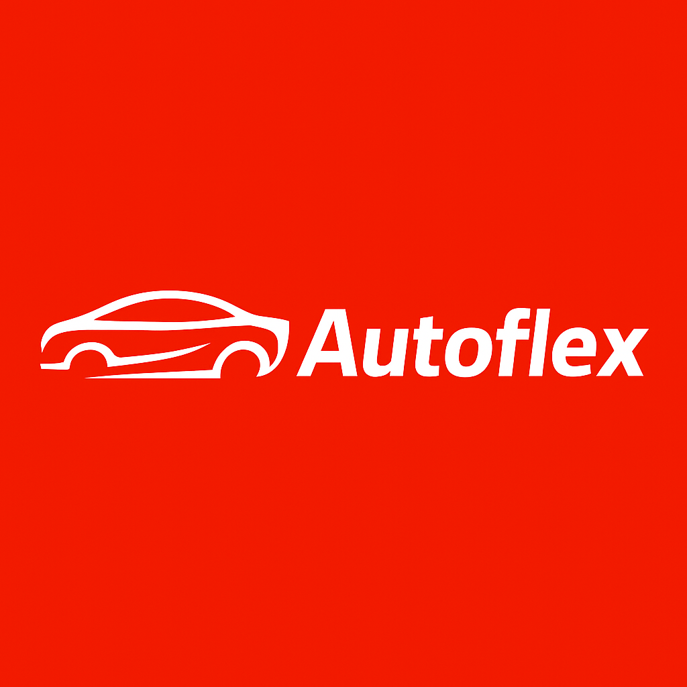
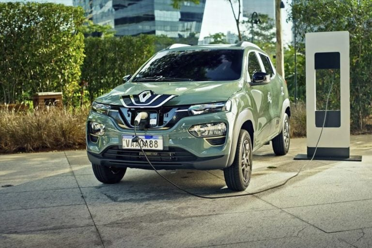

Quem somos
Fundada em 1995, a Autoflex é uma empresa pioneira no setor de carros elétricos. Com mais de 29 anos de experiência no mercado, nossa missão sempre foi clara: oferecer alternativas sustentáveis de transporte que aliem inovação, conforto e respeito ao meio ambiente. Ao longo dessas quase três décadas, conseguimos não apenas criar soluções tecnológicas, mas também ajudar a transformar a forma como as pessoas se conectam com o futuro da mobilidade urbana.
Compromisso com o Meio Ambiente
Desde o início da nossa jornada, nossa preocupação com a poluição ambiental e suas consequências para o planeta foi o que nos motivou a buscar soluções para mitigar os impactos negativos do transporte tradicional. Focamos em carros elétricos como uma forma eficaz de reduzir a emissão de gases poluentes e, ao mesmo tempo, proporcionar aos nossos clientes um meio de transporte mais limpo e eficiente. Para nós, cada veículo que fabricamos representa um passo em direção a um futuro mais verde e saudável.
Inovação e Sustentabilidade
Acreditamos que a inovação é o caminho para criar um equilíbrio entre as necessidades de mobilidade da sociedade e o respeito à natureza. Com uma equipe altamente qualificada e em constante evolução, investimos em pesquisa e desenvolvimento para aprimorar constantemente nossos produtos. Nossos carros elétricos são projetados com tecnologia de ponta, garantindo não apenas o menor impacto ambiental possível, mas também a melhor performance e durabilidade para nossos clientes.
Nosso Propósito
Mais do que vender carros, queremos fazer parte de uma mudança cultural. Acreditamos que cada escolha consciente, por menor que seja, pode ter um grande impacto. Ao escolher um veículo elétrico, nossos clientes não estão apenas investindo em um produto de alta qualidade, mas também contribuindo para a preservação do planeta e a construção de um futuro mais sustentável.
A Visão para o Futuro
Nosso olhar está sempre voltado para o futuro. Sabemos que os desafios são grandes, mas estamos empenhados em continuar inovando e adaptando nossas soluções às novas necessidades do mercado e do meio ambiente. O futuro da mobilidade é elétrico, e estamos orgulhosos de fazer parte dessa transformação, oferecendo aos nossos clientes opções que são não apenas sustentáveis, mas também mais inteligentes e conectadas com as demandas da sociedade moderna.